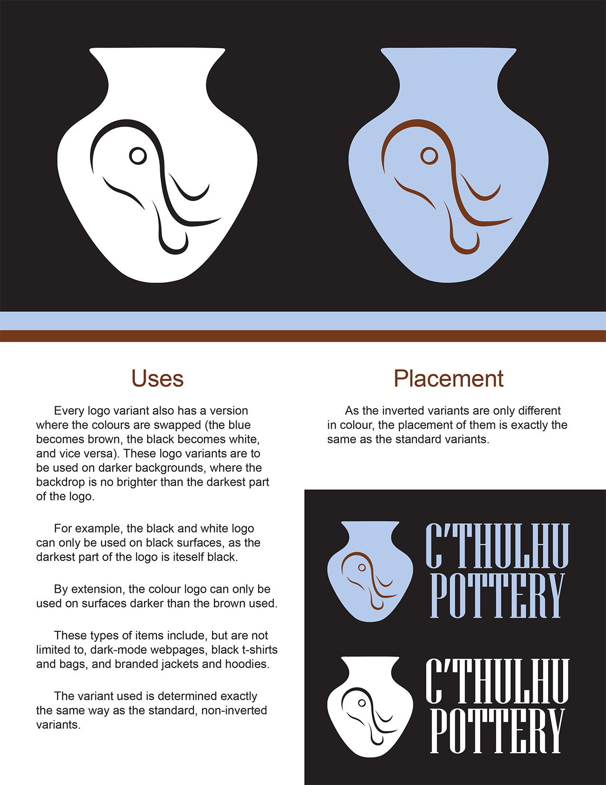
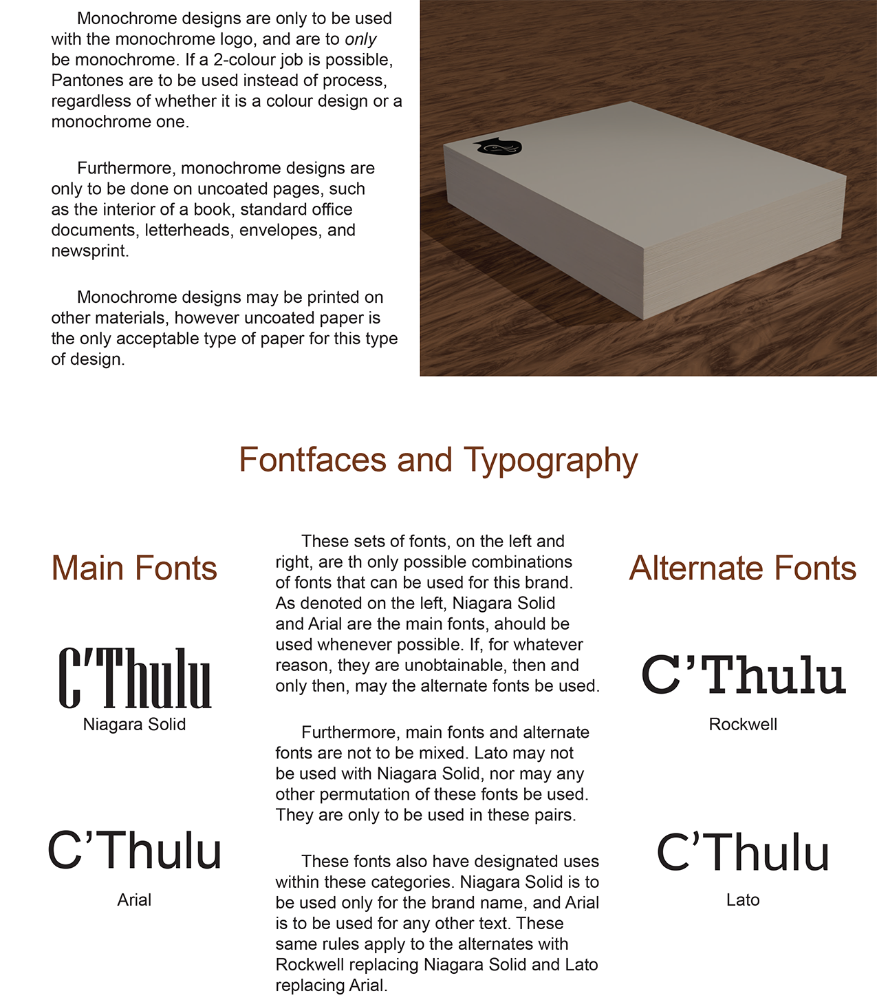
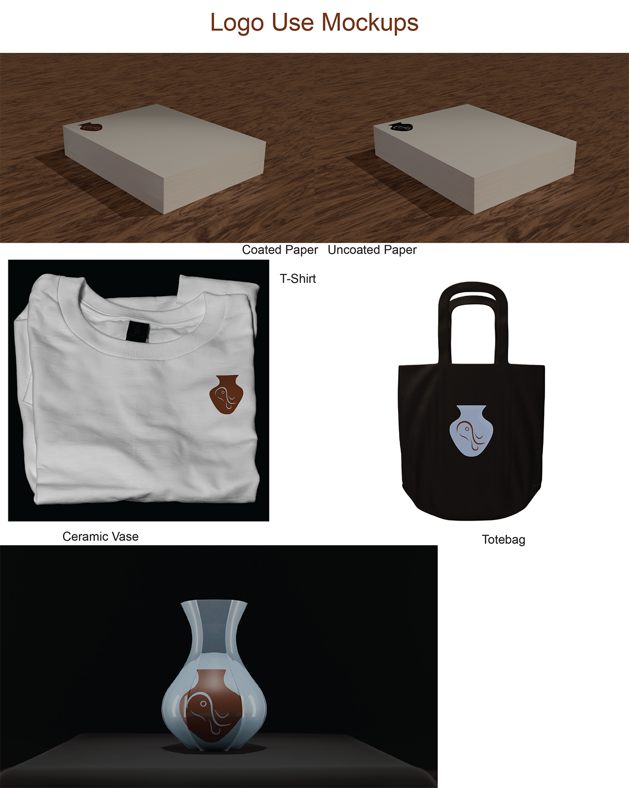

This brand guide is based off of the story The Call of C’Thulhu by H.P. Lovecraft. The first few chapters of the story had a focus on artifacts, primarily of pottery. As such, I thought that the concept would work well for a pottery studio’s branding. To create the logo, I decided on a vase with a side profile engraved on it. Iwent with the description of C’Thulhu’s face as inspiration for the side profile, and used a basic vase shape for the holding shape of it. The vase is based off of the pots from The Legend of Zelda The Wind Waker, however the design is also prevelant in other places historically (i.e. Greek Amphoras). The colours were based of off colours commonly seen in pottery, such as the browns of natural clays and the blue shine of lights off of the wet glazes. This does not cover all colours of clay and glazes, however they are the most prominent that I have seen. The typography has different justifications for different font faces. Firstly, the primary font is a thick, serif font. This is because pottery is either painted or engraved/embossed/debossed. These techniques historically had serifs, due to limitations of the time’s technology. This lends itself to the feeling of a more traditional studio. The secondary font is a basic sans-serif font that is typically used in webpages. This helps with online forms, and while it is slightly less effective on printed documents, it is still readable and makes webpages easier to read, which is an important consideration (due to the prev


